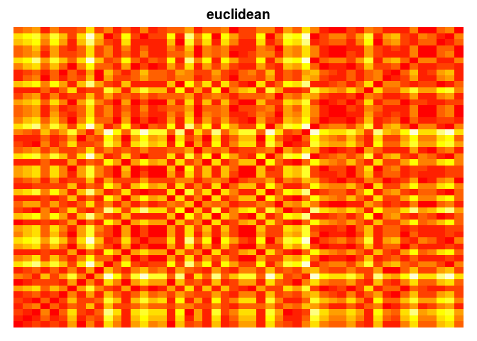

Efficient R programming
Colin Gillespie and Robin Lovelace
2016-02-06
- 1 Introduction
- 2 Efficient set-up
- 3 Efficient hardware
- 4 Efficient Workflow
- 5 Efficient collaboration
- 6 Efficient programming
- 7 Efficient Rcpp
- 8 Efficient Memory
- 9 Efficient Learning

The text and code for the forthcoming O’Reilly book: Efficient R programming. Pull requests and general comments are welcome.
Dependencies for this book
To build this book on your own system, you will need to install the following packages.
pkgs = c("dplyr", "readxl",
"readr", "grid", "png",
"rbenchmark", "microbenchmark",
"fortunes", "pryr", "ggplot2")
to_install = pkgs[!pkgs %in% installed.packages()]
if(length(to_install))
install.packages(to_install)GitHub packages to install.
gh_pkgs = c("csgillespie/efficient_pkg", "rstudio/bookdown", "csgillespie/benchmarkme")
devtools::install_github(gh_pkgs)Then run the command
bookdown::render_book("index.Rmd", bookdown::html_chapters())1 Introduction
Introduction
2 Efficient set-up
An efficient computer set-up is analogous to a well-tuned vehicle: its components work in harmony, it is well-serviced, and it is fast. This chapter describes the software decisions that will enable a productive workflow. We explore how the operating system, R versions and settings, configuration of your R editor, and other settings can make your R work faster. The next chapter deals with hardware. By the end of this chapter you should understand how to optimize your computer for efficient R programming. That includes consideration of the following topics:
- R and the operating systems: system monitoring on Linux, Mac and Windows
- R version: how to keep your base R installation and packages up to date
- R start-up: how and why to adjust your
.Rprofileand.Renvironfiles - RStudio: an integrated development environment (IDE) to boost your programming productivity
- BLAS and alternative R interpreters: looks at ways to make R faster
2.1 Operating system
R works on all three major operating systems (OSs): Linux, Mac and Windows. R is predominantly platform-independent, meaning that it should behave in the same way on each of these platforms. This is partly facilitated by CRAN tests which ensure that R packages work in all major operating systems. There are some operating system specific quirks that may influence the choice of OS and how it is set-up for R programming in the long-term.
2.1.1 Operating system and resource monitoring
Minor differences aside,1 R’s computational efficiency is the same across different operating systems. This is important as it means the techniques will, in general, work equally well on different OSs. Beyond the \(32\) vs \(64\) bit issue (covered in the next chapter) and process forking (covered in Chapter 6) the main issue for many will be user friendliness and compatibility other programs used alongside R for work. Changing operating system can be a time consuming process so our advice is usually to stick to whatever OS you are most comfortable with.
Some packages (e.g. those that must be compiled and that depend on external libraries) are best installed at the operating system level (i.e. not using install.packages) on Linux systems. On Debian-based operating systems such as Ubuntu, these are named with the prefix r-cran- (see Section 2.4).
Regardless of your operating system, it is good practice to track how system resources (primarily CPU and RAM use) respond when running time-consuming tasks. Alongside R profiling functions such as profvis (see Section XXX), system monitoring can help identify performance bottlenecks and opportunities for making tasks run faster.
A common use case for system monitoring of R processes is to identify how much RAM is being used and whether more is needed (covered in Chapter 3). System monitors also report the percentage of CPU resource allocated over time. On modern multi-threaded CPUs, many tasks will use only a fraction of the available CPU resource because R is by default a single-threaded program (see Chapter 6 on parallel programming). Monitoring CPU load in this context can be useful for identifying whether R is running in parallel (see Figure 2-1).

Figure 2-1. Output from a system monitor (gnome-system-monitor running on Ubuntu) showing the resources consumed by running the code presented in the second of the Exercises at the end of this section. The first increases RAM use, the second is single-threaded and the third is multi-threaded.
System monitoring is a complex topic that spills over into system administration and server management. Fortunately there are many tools designed to ease monitoring all major operating systems.
- On Linux, the shell command
topdisplays key resource use figures for most distributions.htopand Gnome’s System Monitor (gnome-system-monitor, see Figure 2-1) are more refined alternatives which use command-line and graphical user interfaces respectively. A number of options such asnethogsmonitor internet usage. - On Windows the Task Manager provides key information on RAM and CPU use by process. This can be started in modern Windows versions by typing
Ctl-Alt-Delor by clicking the task bar and ‘Start Task Manager’. - On Mac the Activity Monitor provides similar functionality. This can be initiated form the Utilities folder in Launchpad.
2.1.2 Exercises
- What is the exact version of your computer’s operating system?
Start an activity monitor then type and execute the following code. How do the results on your system compare to those presented in Figure 2-1?
# 1: Create large dataset X = data.frame(matrix(rnorm(1e8), nrow = 1e7)) # 2: Find the median of each column using a single core r1 = lapply(X, median) # 3: Find the median of each column using many cores # XXX: Change to function from package r2 = parallel::mclapply(X, median) # runs in serial on Windows- What do you notice regarding CPU usage, RAM and system time, during and after each of the three operations?
Bonus question: how would the results change depending on operating system?
2.2 R version
It is important to keep your R installation and packages up-to-date. This section explains how.
2.2.1 Installing R
The method of installing R varies for Windows, Linux and Mac.
On Windows, a single .exe file (hosted at cran.r-project.org/bin/windows/base/) will install the base R package.
On a Mac, the latest version should be installed by downloading the .pkg files hosted at cran.r-project.org/bin/macosx/.
On Debian-based systems adding the CRAN repository in the format. To add the RStudio mirror for Ubuntu 14.04 (codenamed Trusty), for example, add the following line to /etc/apt/sources.list:
echo 'deb https://cran.rstudio.com/bin/linux/ubuntu trusty`In the above code cran.rstudio.com is the mirror and trusty is the Ubuntu version. Then r-base and other r- packages can be installed. R also works on FreeBSD and other Unix-based systems.2
Once R is installed it should be kept up-to-date.
2.2.2 Updating R
R is a mature and stable language so well-written code in base R should work on most versions. However, it is important to keep your R version relatively up-to-date, because:
- Bug fixes are introduced in each version, making errors less likely;
- Performance enhancements are made from one version to the next, meaning your code may run faster in later versions;
- Many R packages only work on recent versions on R.
Release notes with details on each of these issues are hosted at cran.r-project.org/src/base/NEWS. R release versions have 3 components corresponding to major.minor.patch changes. Generally 2 or 3 patches are released before the next minor increment. R 3.2, for example, has consisted of 3 versions: 3.2.0, 3.2.1 and 3.2.2.
- On Ubuntu-based systems, new versions of R should be automatically detected through the software management system, and can be installed with
apt-get upgrade. - On Mac, the latest version should be installed by the user from the
.pkgfiles mentioned above. On Windows
installrpackage makes updating easy:# check and install the latest R version installr::updateR()
For information about changes to expect in the next version, you can subscribe to the R’s NEWS RSS feed: developer.r-project.org/blosxom.cgi/R-devel/NEWS/index.rss. It’s a good way of keeping up to date.
2.2.3 Installing R packages
Large projects may need several packages to be installed. In this case, the required packages can be installed at once. Using the example of packages for handling spatial data, this can be done quickly and concisely with the following code:
pkgs = c("raster", "leaflet", "rgeos") # package names
install.packages(pkgs)In the above code all the required packages are installed with two not three lines, reducing typing. Note that we can now re-use the pkgs object to load them all:
inst = lapply(pkgs, library, character.only = TRUE) # load themIn the above code library(pkg[i]) is executed for every package stored in the text string vector. We use library here instead of require because the former produces an error if the package is not available.
Loading all packages at the beginning of a script is good practice as it ensures all dependencies have been installed before time is spent executing code. Storing package names in a character vector object such as pkgs is also useful because it allows us to refer back to them again and again. To provide another example, we can update only the packages named in pkgs with the following command:
update.packages(oldPkgs = pkgs)2.2.4 Installing R packages with dependencies
Some packages have external dependencies (i.e. they call libraries outside R). On Unix-like systems, these are best installed onto the operating system, bypassing install.packages. This will ensure the necessary dependencies are installed and setup correctly alongside the R package. On Debian-based distributions such as Ubuntu, for example, packages with names starting with r-cran- can be search for and installed as follows (see cran.r-project.org/bin/linux/ubuntu/ for a list of these):
apt-cache search r-cran- # search for available cran Debian packages
sudo apt-get-install r-cran-rgdal # install the rgdal package (with dependencies)On Windows the installr package helps manage and update R packages with system-level dependencies. For example the Rtools package for compiling C/C++ code on Window can be installed with the following command:
installr::install.rtools() 2.2.5 Updating R packages
An efficient R set-up will contain up-to-date packages. This can be done for all packages with:
update.packages() # update installed CRAN packagesThe default for this function is for the ask argument to be set to TRUE, giving control over what is downloaded onto your system.3 This is a good thing: updating dozens of large packages can consume a large proportion of available system resources and much time!
An even more interactive method for updating packages in R is provided by RStudio via Tools > Check for Package Updates. Many such time saving tricks are enabled by RStudio, as described in a subsequent section. Next (after the exercises) we take a look at how to configure R using start-up files.
2.2.6 Exercises
- What version of R are you using? Is it the most up-to-date?
- Do any of your packages need updating?
2.3 R startup
Every time R starts, a number of files are read, in a particular order. The contents of these files determine how R performs for the duration of the session. Note that these files should only be changed with caution, as they may make your R version behave differently to other R installations. This could reduce the reproducibility of your code.
Files in three folders are important in this process:
R_HOME, the directory in which R is installed. Theetcsub-directory can contain start-up files read early on in the start-up process. Find out where yourR_HOMEis with theR.home()command.HOME, the user’s home directory. Typically this is/home/usernameon Unix machines orC:\Users\usernameon Windows (since Windows 7). Ask R where your home directory with,path.expand("~")(note the use of the Unix-like tilde to represent the home directory).R’s current working directory. This is reported by
getwd().
It is important to know the location of the .Rprofile and .Renviron set-up files that are being used out of these three options. R only uses one .Rprofile and one .Renviron in any session: if you have a .Rprofile file in your current project, R will ignore .Rprofile in R_HOME and HOME. Likewise, .Rprofile in HOME overrides .Rprofile in R_HOME. The same applies to .Renviron: you should remember that adding project specific environment variables with .Renviron will de-activate other .Renviron files.
To create a project-specific start-up script, simply create a .Rprofile file in the project’s root directory and start adding R code, e.g. via file.edit(".Rprofile"). Remember that this will make .Rprofile in the home directory be ignored. The following commands will open your .Rprofile from within an R editor:
file.edit(file.path("~", ".Rprofile")) # edit .Rprofile in HOME
file.edit(".Rprofile") # edit project specific .RprofileNote that editing the .Renviron file in the same locations will have the same effect. The following code will create a user specific .Renviron file (where API keys and other cross-project environment variables can be stored), without overwriting any existing file.
user_renviron = path.expand(file.path("~", ".Renviron"))
if(!file.exists(user_renviron)) # check to see if the file already exists
file.create(user_renviron)
file.edit(user_renviron) # open with another text editor if this failsThe location, contents and uses of each is outlined in more detail below.
2.3.1 The .Rprofile file
By default R looks for and runs .Rprofile files in the three locations described above, in a specific order. .Rprofile files are simply R scripts that run each time R runs and they can be found within R_HOME, HOME and the project’s home directory, found with getwd(). To check if you have a site-wide .Rprofile, which will run for all users on start-up, run:
site_path = R.home(component = "home")
fname = file.path(site_path, "etc", "Rprofile.site")
file.exists(fname)The above code checks for the presence of Rprofile.site in that directory. As outlined above, the .Rprofile located in your home directory is user-specific. Again, we can test whether this file exists using
file.exists("~/.Rprofile")We can use R to create and edit .Rprofile (warning: do not overwrite your previous .Rprofile - we suggest you try project-specific .Rprofile first):
if(!file.exists("~/.Rprofile")) # only create if not already there
file.create("~/.Rprofile") # (don't overwrite it)
file.edit("~/.Rprofile")2.3.2 Example .Rprofile settings
An .Rprofile file is just an R script that is run at start-up. The examples at the bottom of the .Rprofile help file
help("Rprofile")give clues as to the types of things we could place in our profile.
2.3.2.1 Setting options
The function options is a list that contains a number of default options. See help("options") or simply type options() to get an idea of what we can configure. In my .Rprofile file, we have the line
options(prompt="R> ", digits=4, show.signif.stars=FALSE)This changes three features.
- The R prompt, from the boring
>to the excitingR>. - The number of digits displayed.
- Removing the stars after significant \(p\)-values.
Typically we want to avoid adding options to the start-up file that make our code non-portable. For example, adding
options(stringsAsFactors=FALSE)to your start-up script has knock-on effects for read.table and related functions including read.csv, making them convert text strings into characters rather than into factors as is default. This may be useful for you, but it is dangerous as it may make your code less portable.
2.3.2.2 Setting the CRAN mirror
To avoid setting the CRAN mirror each time you run install.packages you can permanently set the mirror in your .Rprofile.
## local creates a new, empty environment
## This avoids polluting the global environment with
## the object r
local({
r = getOption("repos")
r["CRAN"] = "https://cran.rstudio.com/"
options(repos = r)
})The RStudio mirror is a virtual machine run by Amazon’s EC2 service, and it syncs with the main CRAN mirror in Austria once per day. Since RStudio is using Amazon’s CloudFront, the repository is automatically distributed around the world, so no matter where you are in the world, the data doesn’t need to travel very far, and is therefore fast to download.
2.3.2.3 The fortunes package
This section illustrate what .Rprofile does with reference to a package that was developed for fun. The code below could easily be altered to automatically connect to a database, or ensure that the latest packages have been downloaded.
The fortunes package contains a number of memorable quotes that the community has collected over many years, called R fortunes. Each fortune has a number. To get fortune number \(50\), for example, enter
fortunes::fortune(50)It is easy to make R print out one of these nuggets of truth each time you start a session, by adding the following to ~/.Rprofile:
if(interactive())
try(fortunes::fortune(), silent=TRUE)The interactive function tests whether R is being used interactively in a terminal. The fortune function is called within try. If the fortunes package is not available, we avoid raising an error and move on. By using :: we avoid adding the fortunes package to our list of attached packages..
The function .Last, if it exists in the .Rprofile, is always run at the end of the session. We can use it to install the fortunes package if needed. To load the package, we use require, since if the package isn’t installed, the require function returns FALSE and raises a warning.
.Last = function() {
cond = suppressWarnings(!require(fortunes, quietly=TRUE))
if(cond)
try(install.packages("fortunes"), silent=TRUE)
message("Goodbye at ", date(), "\n")
}2.3.2.4 Useful functions
You can also load useful functions in .Rprofile. For example, we could load the following two functions for examining data frames:
## ht == headtail
ht = function(d, n=6) rbind(head(d, n), tail(d, n))
## Show the first 5 rows & first 5 columns of a data frame
hh = function(d) d[1:5, 1:5]and a function for setting a nice plotting window:
setnicepar = function(mar = c(3, 3, 2, 1), mgp = c(2, 0.4, 0),
tck = -.01, cex.axis = 0.9,
las = 1, mfrow = c(1, 1), ...) {
par(mar = mar, mgp = mgp, tck = tck,
cex.axis = cex.axis, las = las,
mfrow = mfrow, ...)
}Note that these functions are for personal use and are unlikely to interfere with code from other people. For this reason even if you use a certain package every day, we don’t recommend loading it in your .Rprofile. Also beware the dangers of loading many functions by default: it may make your code less portable. Another downside of putting functions in your .Rprofile is that it can clutter-up your work space: when you run the ls() command, your .Rprofile functions will appear. Also if you run rm(list=ls()), your functions will be deleted.
One neat trick to overcome this issue is to use hidden objects and environments. When an object name starts with ., by default it doesn’t appear in the output of the ls() function
.obj = 1
".obj" %in% ls()## [1] FALSEThis concept also works with environments. In the .Rprofile file we can create a hidden environment
.env = new.env()and then add functions to this environment
.env$ht = function(d, n = 6) rbind(head(d, n), tail(d, n))At the end of the .Rprofile file, we use attach, which makes it possible to refer to objects in the environment by their names alone.
attach(.env)2.3.3 The .Renviron file
The .Renviron file is used to store system variables. It follows a similar start up routine to the .Rprofile file: R first looks for a global .Renviron file, then for local versions. A typical use of the .Renviron file is to specify the R_LIBS path
## Linux
R_LIBS=~/R/library
## Windows
R_LIBS=C:/R/libraryThis variable points to a directory where R packages will be installed. When install.packages is called, new packages will be stored in R_LIBS.
Another common use of .Renviron is to store API keys that will be available from one session to another.4 The following line in .Renviron, for example, sets the ZEIT_KEY environment variable which is used in the package diezeit package:
ZEIT_KEY=PUT_YOUR_KEY_HEREYou will need to sign-in and start a new R session for the environment variable (accessed by Sys.getenv) to be visible. To test if the example API key has been successfully added as an environment variable, run the following:
Sys.getenv("ZEIT_KEY")Use of the .Renviron file for storing settings such as library paths and API keys is efficient because it reduces the need to update your settings for every R session. Furthermore, the same .Renviron file will work across different platforms so keep it stored safely.
2.3.4 Exercises
- What are the three locations where they are stored? Where are these locations on your computer?
- For each location, does a
.Rprofileor.Renvironfile exist? - Create a
.Rprofilefile in your current working directory that prints the messageHappy efficient R programmingeach time you start R at this location.
2.4 RStudio
RStudio is an Integrated Development Environment (IDE) for R. It makes life easy for R users and developers with its intuitive and flexible interface. RStudio encourages good programming practice. Through its wide range of features RStudio can help make you a more efficient and productive R programmer, for example by reducing the amount of time spent remembering and typing function names thanks to intelligent autocompletion. Some of the most important features of RStudio include:
- Flexible window pane layouts to optimise use of screen space and enable fast interactive visual feed-back.
- Intelligent auto-completion of function names, packages and R objects.
- A wide range of keyboard shortcuts.
- Visual display of objects, including a searchable data display table.
- Real-time code checking and error detection.
- Menus to install and update packages.
- Project management and integration with version control.
The above list of features should make it clear that a well set-up IDE can be as important as a well set-up R installation for becoming an efficient R programmer.5 As with R itself, the best way to learn about RStudio is by using it. It is therefore worth reading through this section in parallel with using RStudio to boost your productivity.
2.4.1 Installing and updating RStudio
RStudio can be installed from the RStudio website rstudio.com and is available for all major operating systems. Updating RStudio is simple: click on Help > Check for Updates in the menu. For fast and efficient work keyboard shortcuts should be used wherever possible, reducing the reliance on the mouse. RStudio has many keyboard shortcuts that will help with this. To get into good habits early, try accessing the RStudio Update interface without touching the mouse. On Linux and Windows dropdown menus are activated with the Alt button, so the menu item can be found with:
Alt+H UOn Mac it works differently. Cmd+? should activate a search across menu items, allowing the same operation can be achieved with:
Cmd+? updateNote: in RStudio the keyboard shortcuts differ between Linux and Windows versions on one hand and Mac on the other. In this section we generally only use the Windows/Linux shortcut keys for brevity. The Mac equivalent is usually found by simply replacing Ctl and Alt with the Mac-specific Cmd button.
2.4.2 Window pane layout
RStudio has four main window ‘panes’ (see Figure 2-2 below), each of which serves a range of purposes:
The Source pane, for editing, saving, and dispatching R code to the console (top left). Note that this pane does not exist by default when you start RStudio: it appears when you open an R script, e.g. via File -> New File -> R Script. A common task in this pane is to send code on the current line to the console, via
Ctl-Enter(orCmd-Enteron Mac).The Console pane. Any code entered here is processed by R, line by line. This pane is ideal for interactively testing ideas before saving the final results in the Source pane above.
The Environment pane (top right) contains information about the current objects loaded in the workspace including their class, dimension (if they are a data frame) and name. This pane also contains tabbed sub-panes with a searchable history that was dispatched to the console and (if applicable to the project) Build and Git options.
The Files pane (bottom right) contains a simple file browser, a Plots tab, Help and Package tabs and a Viewer for visualising interactive R output such as those produced by the leaflet package and HTML ‘widgets’.

Figure 2-2. RStudio Panels.
Using each of the panels effectively and navigating between them quickly is a skill that will develop over time, and will only improve with practice.
2.4.3 Exercises
You are developing a project to visualise data. Test out the multi-panel RStudio workflow by following the steps below:
Create a new folder for the input data using the Files pane.
- Type in
downlin the Source pane and hitEnterto make the functiondownload.file()autocomplete. Then type", which will autocomplete to"", paste the URL of a file to download (e.g.https://www.census.gov/2010census/csv/pop_change.csv) and a file name (e.g.pop_change.csv). Execute the full command with
Ctl-Enter:download.file("https://www.census.gov/2010census/csv/pop_change.csv", "data/pop_change.csv")Write and execute a command to read-in the data, such as
pop_change = read.csv("data/pop_change.csv", skip = 2)Use the Environment pane to click on the data object
pop_change. Note that this runs the commandView(pop_change), which launches an interactive data explore pane in the top left panel (see Figure 2-3).

Data Viewer
Figure 2-3. The data viewing tab in RStudio.
Use the Console to test different plot commands to visualise the data, saving the code you want to keep back into the Source pane, as
pop_change.R.Use the Plots tab in the Files pane to scroll through past plots. Save the best using the Export dropdown button.
The above example shows understanding of these panes and how to use them interactively can help with the speed and productivity of you R programming. Further, there are a number of RStudio settings that can help ensure that it works for your needs.
2.4.4 RStudio options
A range of Project Options and Global Options are available in RStudio from the Tools menu (accessible in Linux and Windows from the keyboard via Alt+T). Most of these are self-explanatory but it is worth mentioning a few that can boost your programming efficiency:
GIT/SVN project settings allow RStudio to provide a graphical interface to your version control system, described in Chapter XX.
R version settings allow RStudio to ‘point’ to different R versions/interpreters, which may be faster for some projects.
Restore .RData: Unticking this default preventing loading previously creating R objects. This will make starting R quicker and also reduce the change of getting bugs due to previously created objects.Code editing options can make RStudio adapt to your coding style, for example, by preventing the autocompletion of braces, which some experienced programmers may find annoying. Enabling
Vim modemakes RStudio act as a (partial) Vim emulator.Diagnostic settings can make RStudio more efficient by adding additional diagnostics or by removing diagnostics if they are slowing down your work. This may be an issue for people using RStudio to analyse large datasets on older low-spec computers.
Appearance: if you are struggling to see the source code, changing the default font size may make you a more efficient programmer by reducing the time overheads associated with squinting at the screen. Other options in this area relate more to aesthetics, which are also important because feeling comfortable in your programming environment can boost productivity.
2.4.5 Auto-completion
R provides some basic autocompletion functionality. Typing the beginning of a function name, for example rn (short for rnorm()), and hitting Tab will result in the full function names associated with this text string being printed. In this case two options would be displayed: rnbinom and rnorm, providing a useful reminder to the user about what is available. The same applies to file names enclosed in quote marks: typing te in the console in a project which contains a file called test.R should result in the full name "test.R" being auto-completed. RStudio builds on this functionality and takes it to a new level.
Instead of only auto completing options when Tab is pressed, RStudio auto completes them at any point. Building on the previous example, RStudio’s autocompletion triggers when the first three characters are typed: rno. The same functionality works when only the first characters are typed, followed by Tab: automatic auto-completion does not replace Tab autocompletion but supplements it. Note that in RStudio two more options are provided to the user after entering rn Tab compared with entering the same text into base R’s console described in the previous paragraph: RNGkind and RNGversion. This illustrates that RStudio’s autocompletion functionality is not case sensitive in the same way that R is. This is a good thing because R has no consistent function name style!
RStudio also has more intelligent auto-completion of objects and file names than R’s built-in command line. To test this functionality, try typing US, followed by the Tab key. After pressing down until USArrests is selected, press Enter so it autocompletes. Finally, typing $ should leave the following text on the screen and the four columns should be shown in a drop-down box, ready for you to select the variable of interest with the down arrow.
USArrests$ # a dropdown menu of columns should appear in RStudioTo take a more complex example, variable names stored in the data slot of the class SpatialPolygonsDataFrame (a class defined by the foundational spatial package sp) are referred to in the long form spdf@data$varname.6 In this case spdf is the object name, data is the slot and varname is the variable name. RStudio makes such S4 objects easier to use by enabling autocompletion of the short form spdf$varname. Another example is RStudio’s ability to find files hidden away in sub-folders. Typing "te will find test.R even if it is located in a sub-folder such as R/test.R. There are a number of other clever auto-completion tricks that can boost R’s productivity when using RStudio which are best found by experimenting and hitting Tab frequently during your R programming work.
2.4.6 Keyboard shortcuts
RStudio has many useful shortcuts that can help make your programming more efficient by reducing the need to reach for the mouse and point and click your way around code and RStudio. These can be viewed by using a little known but extremely useful keyboard shortcut:
Alt+Shift+KThis will display the default shortcuts in RStudio. It is worth spending time identifying which of these could be useful in your work and practising interacting with RStudio rapidly with minimal reliance on the mouse. Some more useful shortcuts are listed below. There are many more gems to find that could boost your R writing productivity:
Ctl+Z/Shift+Z: Undo/Redo.Ctl+Enter: Execute the current line or code selection in the Source pane.Ctl+Alt+R: Execute all the R code in the currently open file in the Source pane.Ctl+Left/Right: Navigate code quickly, word by word.Home/End: Navigate to the beginning/end of the current line.Alt+Shift+Up/Down: Duplicate the current line up or down.Ctl+D: Delete the current line.
2.4.7 Object display and output table
It is useful to know what is in your current R environment. This information can be revealed with ls(), but this function only provides object names. RStudio provides an efficient mechanism to show currently loaded objects, and their details, in real-time: the Environment tab in the top right corner. It makes sense to keep an eye on which objects are loaded and to delete objects that are no longer useful. Doing so will minimise the probability of confusion in your workflow (e.g. by using the wrong version of an object) and reduce the amount of RAM R needs. The details provided in the Environment tab include the object’s dimension and some additional details depending on the object’s class (e.g. size in MB for large datasets).
A very useful feature of RStudio is its advanced viewing functionality. This is triggered either by executing View(object) or by double clicking on the object name in the Environment tab. Although you cannot edit data in the Viewer (this should be considered a good thing from a data integrity perspective), recent versions of RStudio provide an efficient search mechanism to rapidly filter and view the records that are of most interest (see Figure 2-3 above).
2.4.8 Project management
In the far top-right of RStudio there is a diminutive drop-down menu illustrated with R inside a transparent box. This menu may be small and simple, but it is hugely efficient in terms of organising large, complex and long-term projects.
The idea of RStudio projects is that the bulk of R programming work is part of a wider task, which will likely consist of input data, R code, graphical and numerical outputs and documents describing the work. It is possible to scatter each of these elements at random across your hard-discs but this is not recommended. Instead, the concept of projects encourages reproducible working, such that anyone who opens the particular project folder that you are working from should be able to repeat your analyses and replicate your results.
It is therefore highly recommended that you use projects to organise your work. It could save hours in the long-run. Organizing data, code and outputs also makes sense from a portability perspective: if you copy the folder (e.g. via GitHub) your can work on it from any computer without worrying about having the right files on your current machine. These tasks are implemented using RStudio’s simple project system, in which the following things happen each time you open an existing project:
The working directory automatically switches to the project’s folder. This enables data and script files to be referred to using relative file paths, which are much shorter than absolute file paths. This means that switching directory using
setwd(), a common source of error for R users, is rarely if ever needed.The last previously open file is loaded into the Source pane. The history of R commands executed in previous sessions is also loaded into the History tab. This assists with continuity between one session and the next.
The
Filetab displays the associated files and folders in the project, allowing you to quickly find your previous work.Any settings associated with the project, such as Git settings, are loaded. This assists with collaboration and project-specific set-up.
Each project is different but most contain input data, R code and outputs. To keep things tidy, we recommend a sub-directory structure resembling the following:
project/
- README.rmd # Project description
- set-up.R # Required packages
- R/ # For R code
- input # Data files
- graphics/
- output/ # ResultsProper use of projects ensures that all R source files are neatly stashed in one folder with a meaningful structure. This way data and documentation can be found where one would expect them. Under this system figures and project outputs are ‘first class citizens’ within the project’s design, each with their own folder.
Another approach to project management is to treat projects as R packages. Creating R packages is easier than ever before, with tools such as devtools for managing R’s quirks and making the process user friendly. If you use GitHub, the advantage of this approach is that anyone should be able to reproduce your working using devtools::install_github("username/projectname"), although the administrative overheads of creating an entire package for each small project will outweigh the benefits for many.
Note that a set-up.R or even a .Rprofile file in the project’s root directory enable project-specific settings to be loaded each time people work on the project. As described in the previous section, .Rprofile can be used to tweak how R works at start-up. It is also a portable way to manage R’s configuration on a project-by-project basis.
2.4.9 Exercises
Try modifying the look and appearance of your RStudio setup.
What is the keyboard shortcut to show the other shortcut? (Hint: it begins with
Alt+Shift.)Try as many of the shortcuts revealed by the previous step as you like. Write down the ones that you think will save you time, perhaps on a post-it note to go on your computer.
2.5 BLAS and alternative R interpreters
In this section we cover a few system-level options available to speed-up R’s performance. Note that for many applications stability rather than speed is a priority, so these should only be considered if a) you have exhausted options for writing your R code more efficiently and b) you are confident tweaking system-level settings. This should therefore be seen as an advanced section: if you are not interested in speeding-up base R, feel free to skip to the next section of hardware.
Many statistical algorithms manipulate matrices. R uses the Basic Linear Algebra System (BLAS) framework for linear algebra operations. Whenever we carry out a matrix operation, such as transpose or finding the inverse, we use the underlying BLAS library. By switching to a different BLAS library, it may be possible to speed-up your R code. Changing your BLAS library is straightforward if you are using Linux, but can be tricky for Windows users.
The two open source alternative BLAS libraries are ATLAS and OpenBLAS. The Intel MKL is another implementation, designed for Intel processors by Intel and used in Revolution R (described in the next section) but it requires licensing fees. The MKL library is provided with the Revolution analytics system. Depending on your application, by switching you BLAS library, linear algebra operations can run several times faster than with the base BLAS routines.
2.5.1 Revolution R
Revolution R is the main software product offered by Revolution Analytics. It is “100%” compatible with R“, supporting all available packages through the MRAN package repository. Revolution R provides faster performance on for certain functions than base R, through its use of MKL, an implementation of BLAS (as described above). Revolution R is available as a free and open source product, ‘Revolution R Open’ (RRO), and is reported to be faster than base R installations.7
Additional benchmarks reported by Eddelbuettel (2010) show the MKL implementations of R used in RRO and the commercial edition to be substantially faster than the reference case.
2.5.2 Other interpreters
The R language can be separated from the R interpreter. The former refers to the meaning of R commands, the latter refers to how the computer executes the commands. Alternative interpreters have been developed to try to make R faster and, while promising, none of the following options has fully taken off.
pqrR (pretty quick R) is a new version of the R interpreter. One major downside, is that it is based on R-2.15.0. The developer (Radford Neal) has made many improvements, some of which have now been incorporated into base R. pqR is an open-source project licensed under the GPL. One notable improvement in pqR is that it is able to do some numeric computations in parallel with each other, and with other operations of the interpreter, on systems with multiple processors or processor cores.
Renjin reimplements the R interpreter in Java, so it can run on the Java Virtual Machine (JVM). Since R will be pure Java, it can run anywhere.
Tibco created a C++ based interpreter called TERR.
Oracle also offer an R-interpreter that uses Intel’s mathematics library and therefore achieves a higher performance without changing R’s core.
At the time of writing, switching interpreters is something to consider carefully. But in the future, it may become more routine.
In this context it is also worth mentioning Julia. This is a fast language and interpreter which aims to provide “a high-level, high-performance dynamic programming language for technical computing” that will be familiar to R and Python users.
2.5.3 Useful BLAS/benchmarking resources
- The gcbd package benchmarks performance of a few standard linear algebra operations across a number of different BLAS libraries as well as a GPU implementation. It has an excellent vignette summarising the results.
- Brett Klamer provides a nice comparison of ATLAS, OpenBLAS and Intel MKL BLAS libraries. He also gives a description of how to install the different libraries.
- The official R manual section on BLAS.
2.5.4 Exercises
- What BLAS system is your version of R using?
3 Efficient hardware
In the previous chapter we saw how relatively simple tweaks to our system set-up can result in substantial time savings. In this chapter we explore the relationship between computer hardware and the speed of code execution. The goal is to help you decide whether the benefits of upgrading your hardware are worth the cost.
We’ll begin with an introductory section on computer storage and memory and how it is measured, before moving on to individual computer components.
3.1 Introduction: what is a byte?
A computer cannot store “numbers” or “letters”. The only thing a computer can store and work with is bits. A bit is binary, it is either a \(0\) or a \(1\). In fact from a physics perspective, a bit is just a blip of electricity that either is or isn’t there.
In the past the ASCII character set dominated computing. This set defines \(128\) characters including \(0\) to \(9\), upper and lower case alpha-numeric and a few control characters such as a new line. To store these characters required \(7\) bits since \(2^7 = 128\), but \(8\) bits were typically used for performance reasons. Table 3.1 gives the binary representation of the first few characters.
| Bit representation | Character |
|---|---|
| \(01000001\) | A |
| \(01000010\) | B |
| \(01000011\) | C |
| \(01000100\) | D |
| \(01000101\) | E |
| \(01010010\) | R |
Table 3.1: The bit representation of a few ASCII characters.
The limitation of only gives having \(256\) characters led to the development of Unicode, a standard framework aimed at creating a single character set for every reasonable writing system. Typically, Unicode characters require sixteen bits of storage.
Eight bits is one byte, or ASCII character. So two ASCII characters would use two bytes or \(16\) bits. A pure text document containing \(100\) characters would use \(100\) bytes (\(800\) bits). Note that mark-up, such as font information or meta-data, can impose a substantial memory overhead: an empty .docx file requires about \(3,700\) bytes of storage.
When computer scientists first started to think about computer memory, they noticed that \(2^{10} = 1024 \simeq 10^3\) and \(2^{20} =1,048,576\simeq 10^6\), so they adopted the short hand of kilo- and mega-bytes. Of course, everyone knew that it was just a short hand, and it was really a binary power. When computers became more wide spread, foolish people like you and me just assumed that kilo actually meant \(10^3\) bytes.
Fortunately the IEEE Standards Board intervened and created conventional, internationally adopted definitions of the International System of Units (SI) prefixes. So a kilobyte (KB) is \(10^3 = 1000\) bytes and a megabyte (MB) is \(10^6\) bytes or \(10^3\) kilobytes (see table 3.2). A petabyte is approximately \(100\) million drawers filled with text. Astonishingly Google processes around \(20\) petabytes of data every day.
| Factor | Name | Symbol | Origin | Derivation | |
|---|---|---|---|---|---|
| \(2^{10}\) | kibi | Ki | Kilobinary: | \((2^{10})^1\) | Kilo: \((10^3)^1\) |
| \(2^{20}\) | mebi | Mi | Megabinary: | \((2^{10})^2\) | Mega: \((10^3)^2\) |
| \(2^{30}\) | gibi | Gi | Gigabinary: | \((2^{10})^3\) | Giga: \((10^3)^3\) |
| \(2^{40}\) | tebi | Ti | Terabinary: | \((2^{10})^4\) | Tera: \((10^3)^4\) |
| \(2^{50}\) | pebi | Pi | Petabinary: | \((2^{10})^5\) | Peta: \((10^3)^5\) |
Table 3.2: Data conversion table. Credit: http://physics.nist.gov/cuu/Units/binary.html
Even though there is now an agreed standard for discussing memory, that doesn’t mean that everyone follows it. Microsoft Windows, for example, uses 1MB to mean \(2^{20}\)B. Even more confusing the capacity of a \(1.44\)MB floppy disk is a mixture, \(1\text{MB} = 10^3 \times 2^{10}\)B.
3.2 Random access memory: RAM
Random access memory (RAM) is a type of computer memory that can be accessed randomly: any byte of memory can be accessed without touching the preceding bytes. RAM is found in computers, phones, tablets and even printers. The amount of RAM R has access to is directly related to the size of data sets that it can process. As the amount of RAM your machine has increases, the size of datasets you can analyse also increases, so it is important to have sufficient RAM for your work.

Figure 3.1: Two \(8\)GB RAM cards. Credit: https://commons.wikimedia.org/wiki/File:Two_8_GB_DDR4-2133_ECC_1.2_V_RDIMMs.jpg
{kind=link}
Even if the original data set is relatively small, the analysis can generate large objects. For example, suppose we want to perform standard cluster analysis. The built-in data set USAarrests, is a data frame with \(50\) rows and \(4\) columns. Each row corresponds to a state in the USA
head(USArrests, 3)## Murder Assault UrbanPop Rape
## Alabama 13.2 236 58 21.2
## Alaska 10.0 263 48 44.5
## Arizona 8.1 294 80 31.0If we want to group states that have similar crime statistics, a standard first step is to calculate the distance or similarity matrix
d = dist(USArrests)When we inspect the object size of the original data set and the distance object using the pryr package
pryr::object_size(USArrests)## 5.23 kBpryr::object_size(d)## 14.3 kBwe have managed to create an object that is three times larger than the original data set. In fact the object d is a symmetric \(n \times n\) matrix, where \(n\) is the number of rows in USAarrests. Clearly, as n increases the size of d increases at rate \(O(n^2)\). So if our original data set contained \(10,000\) records, the associated distance matrix would contain almost \(10^8\) values. Of course since the matrix is symmetric, this corresponds to around \(50\) million unique values. A rough rule of thumb is that your RAM should be three times the size of your data set.
Another benefit of having increasing the amount of onboard RAM is that the ‘garbage collector’, a process that runs periodically to free-up system memory occupied by R, is called less often (we will cover this in more detail in chapter XXX).
It is straightforward to determine how much RAM you have. Under Windows,
- Clicking the
Startbutton picture of the Start button, then right-clicking Computer. Next click onProperties. - In the
Systemsection, you can see the amount of RAM your computer has next to theInstalled memory (RAM)section. Windows reports how much RAM it can use, not the amount installed. This is only an issue if you are using a 32-bit version of Windows.
In Mac, click the Apple menu. Select About This Mac and a window appears with the relevant information.
On almost all Unix-based OSs, you can find out how much RAM you have using the code vmstat, whilst on all Linux distributions, you can use the command free. Using this in conjuction with the -h tag will provide the answer in human readable format, as illustrated below for a 16 Gb machine:
$ free -h
total used free
Mem: 15G 4.0G 11G It is sometimes possible to increase your computer’s RAM. On the computer motherboard, there are typically \(2\) or \(4\) RAM or memory slots. If you have free slots, then you can add more RAM. However, it is common that all slots are already taken. This means that to upgrade your computer’s memory, some or all of the RAM will have to be removed. To go from \(8\)GB to \(16\)GB, for example, you may have to discard the two \(4\)GB RAM cards and replace them with two \(8\)GB cards. Increasing your laptop/desktop from 4GB to \(16\)GB or \(32\)GB is cheap and should definitely be considered. As R Core member Uwe Ligges states,
fortunes::fortune(192)##
## RAM is cheap and thinking hurts.
## -- Uwe Ligges (about memory requirements in R)
## R-help (June 2007)It is a testament to the design of R that it is still relevant and its popularity is growing. Ross Ihaka, one of the originators of the R programming language, made a throw-away comment in 2003:
fortunes::fortune(21)##
## I seem to recall that we were targetting 512k Macintoshes. In our dreams
## we might have seen 16Mb Sun.
## -- Ross Ihaka (in reply to the question whether R&R thought when they
## started out that they would see R using 16G memory on a dual Opteron
## computer)
## R-help (November 2003)Considering that a standard smart phone now contains \(1\)GB of RAM, the fact that R was designed for “basic” computers, but can scale across clusters is impressive. R’s origins on computers with limited resources helps explain its efficiency at dealing with large datasets.
3.2.1 Exercises
The following two exercises aim to help you determine if it is worthwhile upgrading your RAM.
- R loads everything into memory, i.e. your computers RAM. How much RAM do you have?
- Using Google, how much does it cost (in pounds) to double the amount of available RAM on your system?
3.3 Hard drives: HDD vs SSD
Unless you have a fairly expensive laptop your computer probably has a standard hard disk drive (HDD). HDDs were first introduced by IBM in 1956. Data is stored using magnetism on a rotating platter, as shown in Figure 3.2. The faster the platter spins, the faster the HDD can perform. Many laptop drives spin at either \(5400\)RPM (Revolutions per Minute) or \(7200\)RPM. The major advantage of HDDs is that they are cheap, making a \(1\)TB laptop standard.

Figure 3.2: A standard 2.5" hard drive, found in most laptops. Credit: https://en.wikipedia.org/wiki/Hard_disk_drive
Solid state drives (SSDs) can be thought of as large, but more sophisticated versions of USB sticks. They have no moving parts and information is stored in microchips. Since there are no moving parts, reading/writing is much quicker. SSDs have other benefits: they are quieter, allow faster boot time (no ‘spin up’ time) and require less power (more battery life).
The read/write speed for a standard HDD is usually in the region of \(50-120\)MB/s (usually closer to \(50\)MB). For SSDs, speeds are typically over \(200\)MB/s. For top-of-the-range models this can approach \(500\)MB/s. If you’re wondering, read/write speeds for RAM is around \(2-20\)GB/s. So at best SSDs are at least one order of magnitude slower than RAM, but still faster than standard HDDs.
3.4 Operating systems: 32-bit or 64-bit
When we suggest that you should just buy more RAM, this assumes that you are using a \(64\)-bit operating system. A \(32\)-bit machine can access at most only \(4\)GB of RAM. Although some CPUs offer solutions to this limitation, if you are running a \(32\)-bit operating system, then R is limited to around \(3\)GB RAM. If you are running a \(64\)-bit operating system, but only a \(32\)-bit version of R, then you have access to slightly more memory (but not much). Modern systems should run a \(64\)-bit operating system, with a \(64\)-bit version of R. Your memory limit is now measured as \(8\) terabytes for Windows machines and \(128\)TB for Unix-based OSs.
To find precise details consult the R help pages help("Memory-limits") and help("Memory").
3.4.1 Exercises
These exercises aim to condense the previous section into the key points.
- Are you using a \(32\)-bit or \(64\)-bit operating system?
- Are you using \(32\)-bit or \(64\)-bit version of R?
- What are the results of running the command
memory.limit()?
3.5 Central processing unit (CPU)
The central processing unit (CPU), or the processor, is the brains of a computer. The CPU is responsible for performing numerical calculations. The faster the processor, the faster our code will run. The clock speed (or clock rate, measured in hertz) is frequency with which the CPU executes instructions. The faster the clock speed, the more instructions a CPU can execute in a section. CPU clock speed for a single CPU has been fairly static in the last couple of years, hovering around 3.4GHz (see figure 3.3).

Figure 3.3: CPU clock speed. The data for this figure was collected from web-forum and wikipedia. It is intended to indicate general trends in CPU speed.
Unfortunately we can’t simply use clock speeds to compare CPUs, since the internal architecture of a CPU plays a crucial role in determining the CPU performance. The R package benchmarkme provides functions for benchmarking your system and contains data from previous benchmarks. Figure 3.4 shows the relative performance for eight different CPUs. All eight processors are Intel. The fastest processor in this benchmark study was the i7 CPU 870, which was released in 2009. In comparison, the Xeon Processor X3220, released in 2007, is over three times slower.

Figure 3.4: CPU benchmarks from the R package, benchmarkme. Each point represents an individual CPU result.
3.6 Cloud computing
Cloud computing uses networks of remote servers, instead of a local computer, to store and analyse data. It is now becoming increasingly popular to rent cloud computing resources.
3.6.1 Amazon EC2
Amazon Elastic Compute Cloud (EC2) is one of a number of providers of this service. EC2 makes it (relatively) easy to run R instances in the cloud. Users can configure the operating system, CPU, hard drive type, the amount of RAM and where your project is physically located.
If you want to run a server in the Amazon EC2 cloud, you have to select the system you are going to boot up. There are a vast array of pre-packaged system images. Some of these images are just basic operating systems, such as Debian or Ubuntu, which require further configuration. There is also an Amazon machine image that specifically targets R and RStudio.
3.6.2 Exercise
To assess whether you should consider cloud computing, how much does it cost to rent a machine comparable to your laptop in the cloud?
4 Efficient Workflow
5 Efficient collaboration
6 Efficient programming
In this chapter we will discuss key R data types and idiomatic programming style. Many people that use R would not describe themselves as “programmers”. Instead, they have advanced domain level knowledge, but little formal training in programming. This chapter comes from their point of view; someone who has use standard R data structures, such as vectors and data frames, but has never looked as the inner workings of these objects.
We begin this chapter by discussing key data types, how they are used and potential computational gains available. Once we understand these objects, we will look at key R programming idioms, before covering techniques for speeding up code.
6.1 Data types
A data type is an object that has a set of predifined characteristics, such as a number or a character. When programming in C or FORTRAN, the data type of every object must be specified by the user. he advantage is that it allows the compiler to perform type-specific optimisation. The downside is verbose and fragile code, which is inefficient to type. In R data types are less critical, but understanding them will help you debug and optimize for computational efficiency. Essentially, we have a trade-off between CPU run time and developer thinking time. However an understanding of data types can help when debugging and optimizing for computational efficiency. In this chapter, we will pick out the key point data types from an efficiency perspective. Chapter 2 of Advanced R Programming (Wickham 2014) provides a more comprehensive treatment.
6.1.1 Vectors
The vector is a fundamental data structure in R. Confusingly there are two varieties:
- Atomic vectors are where all elements have the same type and are usually created using the
c()function; - Lists are where elements can have different types.
To test if an object is a vector, we must use is.atomic(x) || is.list(x). The more obvious choice for determining if an object is a vector, is.vector(x), only returns TRUE is an object is a vector with no attributes other than names. For example, when we use the table function
x = table(rpois(100, 5))the object x has additional attributes (such as dim), so is.vector(x) return FALSE. But the contents x is clearly a vector, so is.atomic(x) returns TRUE.
The core vector data types are logicals, integers, doubles and characters. When an atomic vector is created with a mixture of types, the output type is coerced to highest type in the following hierarchy:
logical < integer < double < character This means that any vector containing a character string will be coerced to class, as illustrated below.
6.1.1.1 Numerics: doubles and integers
Numbers in R are usually stored in double-precision floating-point format - see Braun and Murdoch (2007) and Goldberg (1991). The term ‘double’ refers to the fact that on \(32\) bit systems (for which the format was developed) two memory locations are used to store a single number. Each double-precision number occupies \(8\) bytes and is accurate to around \(17\) decimal places (R does not print all of these, as you will see by typing pi). Somewhat surprisingly, when we run the command
x = 1we have created an atomic vector, contain a single double-precision floating point number. When comparing floating point numbers, we should be particularly careful, since
y = sqrt(2)*sqrt(2)
y == 2## [1] FALSEThis is because the value of y is not exactly \(2\), instead it’s almost \(2\)
sprintf("%.16f", y)## [1] "2.0000000000000004"To compare numbers in R it is advisable to use all.equal and set an appropriate tolerance, e.g.
all.equal(y, 2, tolerance = 1e-9)## [1] TRUEAlthough using double precision objects is the most common type, R does have other ways of storing numbers:
single: R doesn’t have a single precision data type. Instead, all real numbers are stored in double precision format. The functionsas.singleandsingleare identical toas.doubleanddoubleexcept they set the attributeCsinglethat is used in the.Cand.Fortraninterface.integer: Integers primarily exist to be passed to C or Fortran code. Typically we don’t worry about creating integers. However they are occasionally used to optimise sub-setting operations. When we subset a data frame or matrix, we are interacting with C code. For example, if we look at the arguments for theheadfunction
args(head.matrix)## function (x, n = 6L, ...)
## NULLThe default argument is 6L (the L, is short for Literal and is used to create an integer). Since this function is being called by almost everyone that uses R, this low level optimisation is useful. To illustrate the speed increase, suppose we are selecting the first \(100\) rows from a data frame (clock_speed, from the efficient package). The speed increase is illustrated below, using the microbenchmark package:
s_int = 1:100; s = seq(1, 100, 1.0)
microbenchmark(clock_speed[s_int, 2L], clock_speed[s, 2.0], times=1000000L)## Unit: microseconds
## expr min lq mean median uq max neval cld
## clock_speed[s_int, 2L] 11.79 13.43 15.30 13.81 14.22 87979 1e+06 a
## clock_speed[s, 2] 12.79 14.37 16.04 14.76 15.18 21964 1e+06 bThe above result shows that using integers is slightly faster, but probably not worth worrying about.
numeric: The functionnumeric()is identical todouble(); it creates is a double-precision number. However,is.numeric()isn’t the same asas.double(), insteadis.numeric()returnsTRUEfor both numeric and double types.
To find out the type of data stored in an R vector use the command typeof():
typeof(c("a", "b"))## [1] "character"6.1.1.2 Exercises
A good way of determining how to use more advanced programming concepts, is to examine the source code of R.
- What are the data types of
c(1, 2, 3)and1:3? - Have a look at the following function definitions:
tail.matrixlm
- How does the function
seq.int, which was used in thetail.matrixfunction, differ to the standardseqfunction?
6.1.2 Factors
A factor is useful when you know all of the possible values a variable may take. For example, suppose our data set related to months of the year
m = c("January", "December", "March")If we sort m in the usual way sort(m), we use standard alpha-numeric ordering, placing December first. While this is completely correct, it is also not that helpful. We can use factors to remedy this problem by specifying the admissible levels
## month.name contains the 12 months
fac_m = factor(m, levels=month.name)
sort(fac_m)## [1] January March December
## 12 Levels: January February March April May June July August ... DecemberMost users interact with factors via the read.csv function where character columns are automatically converted to factors. It is generally recommended to avoid this feature using the stringsAsFactors=FALSE argument. Although this argument can be also placed in the global options() list, this leads to non-portable code, so should be avoided.
Although factors look similar to character vectors, they are actually integers. This leads to initially surprising behaviour
c(m)## [1] "January" "December" "March"c(fac_m)## [1] 1 12 3In this case the c() function is using the underlying integer representation of the factor. Overall factors are useful, but can lead to unwanted side-effects if we are not careful.
In early versions of R, storing character data as a factor was more space efficient. However since identical character strings now share storage, the space gain in factors is now space.
6.1.3 Data frames
A data frame is a tabular (two dimensional or ‘rectangular’) object in which the columns may be composed of differing vector types such as numeric, logical, character and so on. Matrices can only accept a single data type for all cells as explained in the next section. Data frames are the workhorses of R. Many R functions, such as boxplot, lm and ggplot, expect your data set to be in a data frame. As a general rule, columns in your data should be variables and rows should be the thing of interest. This is illustrated in the USAarrests data set:
head(USArrests, 2)## Murder Assault UrbanPop Rape
## Alabama 13.2 236 58 21.2
## Alaska 10.0 263 48 44.5Note that each row corresponds to a particular state and each column to a variable. One particular trap to be wary of is when using read.csv and read.table characters are automatically converted to factors. One can avoid this pitfall by using the argument stringsAsFactors = FALSE.
Since working with R frequently involves interacting with data frames, it’s useful to be fluent a few key functions:
| Name | Description |
|---|---|
dim |
Data frame dimensions |
ncol/nrow |
No. of columns/rows |
NCOL/NROW |
As above, but also works with vectors |
cbind/rbind |
Column/row bind |
head/tail |
Select the first/last few rows |
colnames/rownames |
Column and row |
When loading a dataset called df into R, a typical workflow would be:
- Check dimensions using
dim(df); - Look at the first/last few rows using
head(df)andtail(df); - Rename columns using
colnames(df) =.
6.1.4 Matrix
A matrix is similar to a data frame: it is a two dimensional object and sub-setting and other functions work in the same way. However all matrix columns must have the same type. Matrices tend to be used during statistical calculations. Linear regression using lm(), for example, internally converts the data to a matrix before calculating the results; any characters are thus recoded as numeric dummy variables.
Matrices are generally faster than data frames. The datasets ex_mat and ex_df from the efficient package each have \(1000\) rows and \(100\) columns. They contain the same random numbers. However, selecting rows from a data frame is around \(150\) times slower than a matrix. This illustrates the reason for using matrices instead of data frames for efficient modelling in R:
data(ex_mat, ex_df, package="efficient")
benchmark(replications=10000,
ex_mat[1,], ex_df[1,],
columns=c("test", "elapsed", "relative"))## test elapsed relative
## 2 ex_df[1, ] 5.546 126.045
## 1 ex_mat[1, ] 0.044 1.0006.1.5 S3 objects
R has three built-in object oriented systems. These systems differ in how classes and methods are defined. The easiest and oldest system is the S3 system. S3 refers to the third version of S. The syntax of R is largely based on this version of S. In R there has never been S1 and S2 classes.
The S3 system implements a generic-function object oriented (OO) system. This type of OO is different to the message-passing style of Java and C++. In a message-passing framework, messages/methods are sent to objects and the object determines which function to call, e.g. normal.rand(1). The S3 class system is different. In S3, the generic function decides which method to call - it would have the form rand(normal, 1).
The S3 system is based on the class of an object. In this system, a class is just an attribute. The S3 class(es) of a object can be determined with the class function.
## [1] "data.frame"The S3 system can be used to great effect. For example, a data.frame is simply a standard R list, with class data.frame. When we pass an object to a generic function, the function first examines the class of the object, and then decides what to do: it dispatches to another method. The generic summary function, for example, contains the following:
summary## function (object, ...)
## UseMethod("summary")
## <bytecode: 0x6e604b0>
## <environment: namespace:base>Note that the only operational line is UseMethod("summary"). This handles the method dispatch based on the object’s class. So when summary(USArrests) is executed, the generic summary function passes USArrests to the function summary.data.frame.
This simple mechanism enables us to quickly create our own functions. Consider the distance object:
dist_usa = dist(USArrests)dist_usa has class dist. To visualise the distances, we can create an image method. First we’ll check if the existing image function is generic, via
image## function (x, ...)
## UseMethod("image")
## <bytecode: 0x55abfc8>
## <environment: namespace:graphics>Since image is already a generic method, we just have to create a specific dist method
image.dist = function(x, ...) {
x_mat = as.matrix(x)
image(x_mat, main=attr(x, "method"), ...)
}The ... argument allows us to pass arguments to the main image method, such as axes:
image(dist(USArrests), axes=FALSE)
Many S3 methods work in the same way as the simple image.dist function created above: the object is converted into a standard format, then passed to the standard method. Creating S3 methods for standard functions such as summary, mean, and plot provides a nice uniform interface to a wide variety of data types.
6.1.5.1 Exercises
- Use a combination of
unclassandstron a data frame to confirm that it is a list. - Use the function
lengthon a data frame. What is return? Why?
6.1.6 Efficient data structures
Even when our data set is small, the analysis can generate large objects. For example suppose we want to perform standard cluster analysis. Using the built-in data set USAarrests, we calculate a distance matrix:
dist_usa = dist(USArrests)The resulting object dist_usa measures the similarity between two states with respect to the input data. Since there are \(50\) states in the USAarrests data set, this results in a matrix with \(50\) columns and \(50\) rows. Intuitively, since the matrix dist_usa is symmetric around the diagonal, it makes sense to exploit this characteristic for efficiency, allowing storage to be halved. If we examine the object dist_usa, with str(dist_usa), it becomes apparent that the data is efficiently stored as a vector with some attributes.
Another efficient data structure is a sparse matrix. This is simply a matrix in where most of the elements are zero. Conversely, if most elements are non-zero, the matrix is considered dense. The proportion of non-zero elements is called the sparsity. Large sparse matrices often crop up when performing numerical calculations. Typically, our data isn’t sparse but the resulting data structures we create may be sparse. There are a number of techniques/methods used to store sparse matrices. Methods for creating sparse matrices can be found in the Matrix package. For this dist object, since the structure is regular.
6.2 Good programming techniques
A major benefit of using R (as opposed to C or Fortran, say), is that coding time is greatly reduced. However if we are not careful, it’s very easy to write programs that are incredibly slow. While optimisations such as going parallel can easily double speed, poor code can easily run 100s of times slower. For this reason a priority of an efficient programmer should be to avoid the following common mistakes. If you spend any time programming in R, then reading (Burns 2011) should be considered essential reading.
6.2.1 General tips
The key to making R code run fast is to access the underlying C/Fortran routines as quickly as possible. For example, suppose that x is a standard R vector of length n. Then
x = x + 1involves a single function call to the + function. Whereas,
for(i in 1:n) {
x[i] = x[i] + 1
}has
nfunction calls to+;nfunction calls to the[function;nfunction calls to the[<-function (used in the assignment operation);- A function call to
forand the:operator.
It isn’t that the for loop is slow, rather it is because we calling many more functions. This point is indirectly tackled again in the section on vectorised code.
Another general technique is to be careful with memory allocation. In fact this could be considered the number \(1\) rule when programming in R. If possible always pre-allocate your vector or data frame then fill in the values. Let’s consider three methods of creating a sequence of numbers.
Method 1 creates an empty vector, and grows the object
method1 = function(n) {
myvec = NULL
for(i in 1:n)
myvec = c(myvec, i)
myvec
}Method 2 creates an object of the final length and then changes the values in the object by subscripting:
method2 = function(n) {
myvec = numeric(n)
for(i in 1:n)
myvec[i] = i
myvec
}Method 3 directly creates the final object
method3 = function(n) 1:nTo compare the three methods we use the benchmark function from the previous chapter
n = 1e4
benchmark(replications=10,
method1(n), method2(n), method3(n),
columns=c("test", "elapsed"))## test elapsed
## 1 method1(n) 1.154
## 2 method2(n) 0.070
## 3 method3(n) 0.001The table below shows the timing in seconds on my machine for these three methods for a selection of values of \(n\). The relationships for varying \(n\) are all roughly linear on a log-log scale, but the timings between methods are drastically different. Notice that the timings are no longer trivial. When \(n=10^7\), method 1 takes around an hour whilst method 2 takes \(2\) seconds and method 3 is almost instantaneous.
| \(n\) | Method 1 | Method 2 | Method 3 |
|---|---|---|---|
| \(10^5\) | \(\phantom{000}0.208\) | \(0.024\) | \(0.000\) |
| \(10^6\) | \(\phantom{00}25.500\) | \(0.220\) | \(0.000\) |
| \(10^7\) | \(3827.0000\) | \(2.212\) | \(0.000\) |
6.2.2 Caching variables
A straightforward method for speeding up code is to calculate objects once and reuse the value when necessary. This could be as simple with replacing log(x) in multiple function calls with the object log_x that is defined once and reused. This small saving in time, quickly multiplies when the cached variable is used inside a for loop.
A more advanced form of caching is use the memoise package. If a function is called multiple times with the same input, it may be possible to speed things up by keeping a cache of known answers that it can retrieve. The memoise package allows us easily store the value of function call and returns the cached result when the function is called again with the same arguments. This package trades off memory versus speed, since the memoised function stores all previous inputs and outputs. To cache a function, we simply pass the function to the memoise function.
The classic memoise example is the factorial function. Another example is to limit use to a web resource. For example, suppose we are developing a shiny (an interactive graphic) application where the user can fit regression line to data. The user can remove points and refit the line. An example function would be
## Argument indicates row to remove
plot_mpg = function(row_to_remove) {
data(mpg, package="ggplot2")
mpg = mpg[-row_to_remove,]
plot(mpg$cty, mpg$hwy)
lines(lowess(mpg$cty, mpg$hwy), col=2)
}We can use memoise speed up by caching results. A quick benchmark
m_plot = memoise(plot_mpg)
benchmark(m_plot(10), plot_mpg(10), columns = c("test", "relative", "elapsed"))
# test relative elapsed
#1 m_plot(10) 1.000 0.007
#2 plot_mpg(10) 481.857 3.373suggests that we can obtain a 500-fold speed-up.
6.2.3 Function closures
More advanced caching is available using function closures. A closure in R is an object that contains functions bound to the environment the closure was created in. Technicially all functions in R have this property, but we use the term function closure to denote functions where the environment is not .GlobalEnv. One of the environments associated with function is known as the enclosing environment, that is, where was the function created. We can determine the enclosing environment using the environment function
environment(plot_mpg)## <environment: R_GlobalEnv>The plot_mpg function’s enclosing environment is the .GlobalEnv. This is important for variable scope, i.e. where should be look for a particular object. Consider the function f
f = function() {
x = 5
function() {
x
}
}When we call the function f, the object returned is a function. While the enclosing environment of f is .GlobalEnv, the enclosing environment of the returned function is something different
g = f()
environment(g)## <environment: 0x6e3d768>When we call this new function g,
x = 10
g()## [1] 5The value returned is obtained from environment(g) is 5, not .GlobalEnv. This environment allows to cache variables between function calls. The counter function is basic example of this feature
counter = function() {
no = 0
count = function() {
no <<- no + 1
no
}
}When we call the function, we retain object values between function calls
sc = counter()
sc()## [1] 1sc()## [1] 2The key points of the counter function are
The counter function returns a function
sc = counter() sc()## [1] 1- The enclosing environment of
scis not.GlobalEnvinstead, it’s the binding environment ofsc. - The function
schas an environment that can be used to store/cache values The operator
<<-is used to alter theno.
We can exploit function closures to simplify our code. Suppose we wished to simulate a games of Snakes and Ladders. We could have function that checked if we landed on a Snake, and if so move
check_snake = function(square) {
switch(as.character(square),
'16'=6, '49'=12, '47'=26, '56'=48, '62'=19,
'64'=60, '87'=24, '93'=73, '96'=76, '98'=78,
square)
}If we then wanted to determine how often we landed on a Snake, we could use a function closure to keep track
check_snake = function() {
no_of_snakes = 0
function(square) {
new_square = switch(as.character(square),
'16'=6, '49'=12, '47'=26, '56'=48, '62'=19,
'64'=60, '87'=24, '93'=73, '96'=76, '98'=78,
square)
no_of_snakes = no_of_snakes + (new_square != square)
new_square
}
}By keeping the variable no_of_snakes attached to the check_snake function, enables us to have cleaner code.
6.2.4 Vectorised code
When writing code in R, you need to remember that you are using R and not C (or even Fortran 77!). For example,
## Change 1000 uniform random numbers
x = runif(1000) + 1
logsum = 0
for(i in 1:length(x))
logsum = logsum + log(x[i])is a piece R code that has a strong, unhealthy influence from C. Instead we should write
logsum = sum(log(x))Writing code this way has a number of benefits.
- It’s faster. When \(n = 10^7\) the ``R way’’ is about forty times faster.
- It’s neater.
- It doesn’t contain a bug when
xis of length \(0\).
Another common example is sub-setting a vector. When writing in C, we would have something like:
ans = NULL
for(i in 1:length(x)) {
if(x[i] < 0)
ans = c(ans, x[i])
}This of course can be done simply with
ans = x[x < 0]
Figure 6.2 Example of Monte-Carlo integration. To estimate the area under the curve throw random points at the graph and count the number of points that lie under the curve.
6.2.4.1 Example: Monte-Carlo integration
It’s also important to make full use of R functions that use vectors. For example, suppose we wish to estimate \[ \int_0^1 x^2 dx \] using a basic Monte-Carlo method. Essentially, we throw darts at the curve and count the number of darts that fall below the curve (as in figure 6.2).
Monte Carlo Integration
- Initialise:
hits = 0 - for i in 1:N
- \(~~~\) Generate two random numbers, \(U_1, U_2\), between 0 and 1
- \(~~~\) If \(U_2 < U_1^2\), then
hits = hits + 1 - end for
- Area estimate =
hits/N
A standard C approach to implementing this Monte-Carlo algorithm would be something like:
N = 500000
f = function(N){
hits = 0
for(i in 1:N) {
u1 = runif(1); u2 = runif(1)
if(u1^2 > u2)
hits = hits + 1
}
return(hits/N)
}In R this takes a few seconds:
system.time(f(N))## user system elapsed
## 1.771 0.000 1.772In contrast, a more R-centric approach would be the following:
f1 = function(N){
hits = sum(runif(N)^2 > runif(N))
return(hits/N)
}f1 is around \(30\) times faster than f, illustrating the efficiency gains that can be made by vectorising your code:
system.time(f1(N))## user system elapsed
## 0.033 0.000 0.0336.3 Parallel computing
In recent R versions (since R 2.14.0) parallel package comes pre-installed with base R. The parallel package must still be loaded before use however, and you must determine the number of available cores manually, as illustrated below.
library("parallel")
no_of_cores = detectCores()The computer used to compile the published version of this book chapter has 2 CPUs/Cores.
6.3.1 Parallel versions of apply functions
The most commonly used parallel applications are parallelized replacements of lapply, sapply and apply. The parallel implementations and their arguments are shown below.
parLapply(cl, x, FUN, ...)
parApply(cl = NULL, X, MARGIN, FUN, ...)
parSapply(cl = NULL, X, FUN, ..., simplify = TRUE, USE.NAMES = TRUE) Note that each function has an argument cl which must be created by makeCluster. This function, amongst other things, specifies the number of processors to use.
6.3.2 Example: parallel bootstraping
In 1965, Gordon Moore co-founder of Intel, observed that the number of transistors in a dense integrated circuit doubles approximately every two years. This observation is known as Moore’s law. A scatter plot (figure 6.3) of processors over the last thirty years shows that that this law seems to hold

(#fig:unnamed-chunk-93)Transistor counts against introduction date. Credit: https://en.wikipedia.org/wiki/Transistor_count
Figure 6.3: Transistor counts against introduction date. Credit: https://en.wikipedia.org/wiki/Transistor_count
We can estimate the trend using simple linear regression. A standard algorithm for obtaining uncertainty estimates on regression coefficients is bootstrapping. This is a simple algorithm; at each iteration we sample with replacement from the original data set and estimate the parameters of the new data set. The distribution of the parameters gives us our uncertainty estimate. We begin by loading the data set and creating a function for performing a single bootstrap
data("transistors", package="efficient")
bs = function(i) {
s = sample(1:NROW(transistors), replace=TRUE)
trans_samp = transistors[s,]
coef(lm(log2(Count) ~ Year, data=trans_samp))
}We can then perform \(N=10^4\) bootstraps using sapply
N = 10000
sapply(1:N, bs)Rewriting this code to make use of the parallel package is straightforward. We begin by making a cluster and exporting the data set
library("parallel")
cl = makeCluster(6)
clusterExport(cl, "transistors")Then use parSapply and stop the cluster
parSapply(cl, 1:N, bs)
stopCluster(cl)On this computer, we get a four-fold speed-up.
stopCluster(cl)6.3.3 Process forking
Another way of running code in parallel is to use the mclapply and mcmapply functions. These functions use forking forking, that is creating a new copy of a process running on the CPU. However, Windows does not support this low-level functionality in the way that Linux does.
6.4 The byte compiler
The compiler package, written by R Core member Luke Tierney has been part of R since version 2.13.0. Since R 2.14.0, all of the standard functions and packages in base R are pre-compiled into byte-code. This is illustrated by the base function mean:
mean## function (x, ...)
## UseMethod("mean")
## <bytecode: 0x55ec3b8>
## <environment: namespace:base>The third line contains the bytecode of the function. This means that the compiler package translates the R function into another language that can be interpreted by a very fast interpreter.
The compiler package allows R functions to be compiled, resulting in a byte code version that may run faster8. The compilation process eliminates a number of costly operations the interpreter has to perform, such as variable lookup. Amazingly the compiler package is almost entirely pure R, with just a few C support routines.
6.4.1 Example: the mean function
The compiler package comes with R, so we just need to load the package in the usual way
library("compiler")Next we create an inefficient function for calculating the mean. This function takes in a vector, calculates the length and then updates the total variable.
my_mean = function(x) {
total = 0
n = length(x)
for(i in 1:n)
total = total + x[i]/n
total
}This is clearly a bad function and we should just mean function, but it’s a useful comparison. Compiling the function is straightforward
cmp_mean = cmpfun(my_mean)Then we use the benchmark function to compare the three variants
## Generate some data
x = rnorm(100)
benchmark(my_mean(x), cmp_mean(x), mean(x),
columns=c("test", "elapsed", "relative"),
order="relative", replications=5000)The compiled function is around seven times faster than the uncompiled function. Of course, the native mean function is faster, but the compiling does make a significant difference.

(#fig:unnamed-chunk-104)Comparsion of mean functions.
Figure 6.4: Comparison of mean functions.
6.4.2 Compiling code
There are a number of ways to compile code. The easiest is to compile individual function using cmpfun, but this obviously doesn’t scale. If you create a package, then you automatically compile the package on installation by adding
ByteCompile: trueto the DESCRIPTION file. Most R packages installed using install.packages are not compiled. We can enable (or force) packages to be compiled by starting R with the environment variable R_COMPILE_PKGS set to a positive integer value.
A final option to use just-in-time (JIT) compilation. The enableJIT function disables JIT compilation if the argument is 0. Arguments 1, 2, or 3 implement different levels of optimisation. JIT can also be enabled by setting the environment variable R_ENABLE_JIT, to one of these values.
7 Efficient Rcpp
8 Efficient Memory
9 Efficient Learning
Braun, John, and Duncan J Murdoch. 2007. A First Course in Statistical Programming with R. Vol. 25. Cambridge University Press Cambridge.
Burns, Patrick. 2011. The R Inferno. Lulu.com.
Eddelbuettel, Dirk. 2010. “Benchmarking Single-and Multi-Core BLAS Implementations and GPUs for Use with R.” Mathematica.
Goldberg, David. 1991. “What Every Computer Scientist Should Know About Floating-Point Arithmetic.” ACM Computing Surveys (CSUR) 23 (1). ACM: 5–48.
Sekhon, Jasjeet S. 2006. “The Art of Benchmarking: Evaluating the Performance of R on Linux and OS X.” The Political Methodologist 14 (1): 15–19.
Wickham, Hadley. 2014. Advanced R. CRC Press.
Benchmarking conducted for a presentation “R on Different Platforms” at useR 2006 found that R was marginally faster on Windows than Linux set-ups. Similar results were reported in an academic paper, with R completing statistical analyses faster on a Linux than Mac OS’s (Sekhon 2006). In 2015 Revolution R supported these results with slightly faster run times for certain benchmarks on Ubuntu than Mac systems. The data from the
benchmarkmepackage also suggests that running code under the Linux OS is faster.↩See jason-french.com/blog/2013/03/11/installing-r-in-linux/ for more information on installing R on a variety of Linux distributions.↩
In the previous section we specified only a few packages to update.↩
See
vignette("api-packages")from thehttrpackage for more on this.↩Other open source R IDEs exist, including RKWard, Tinn-R and JGR. emacs is another popular software environment. However, it has a very steep learning curve.↩
‘Slots’ are sub-elements of an object analogous to a column in a
data.framebut referred to with@not$.↩See brodrigues.co/2014/11/11/benchmarks-r-blas-atlas-rro/, which finds Revolution R to be marginally faster than R using OpenBLAS and ATLAS BLAS implementations and Faster BLAS in R, which does not.↩
The authors have yet to find a situation where byte compiled code runs significantly slower.↩